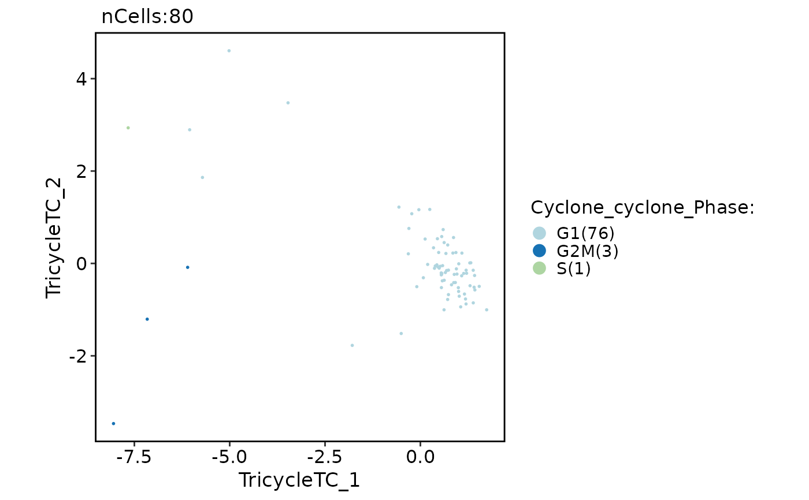
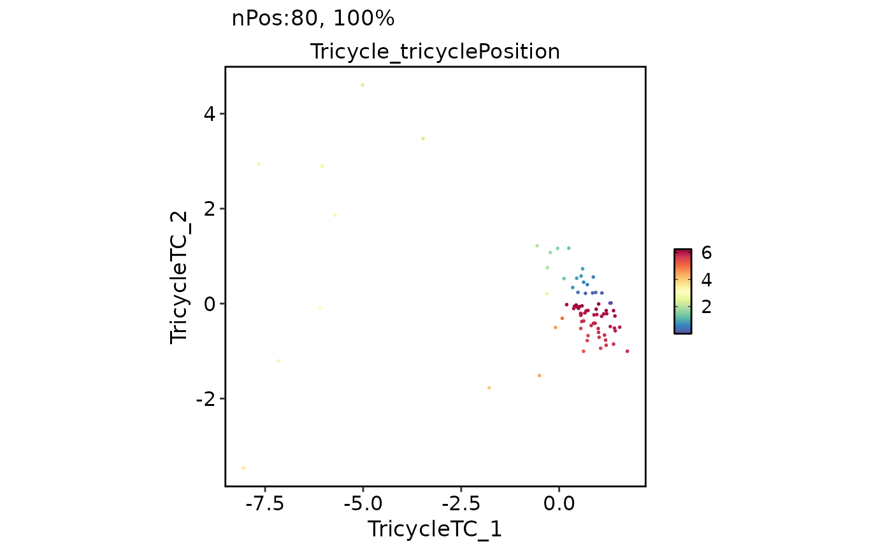

Estimate cell cycle state with Seurat gene-set scoring, scran::cyclone(),
or tricycle.
Usage
RunCellCycle(
object,
method = c("Seurat", "cyclone", "tricycle"),
assay = NULL,
layer = "counts",
species = "Homo_sapiens",
name = "CellCycle",
phase_col = NULL,
overwrite = FALSE,
verbose = TRUE,
...,
srt = NULL
)Arguments
- object
A
Seuratobject.- method
Cell cycle estimation method. One of
"Seurat","cyclone", or"tricycle".- assay
Assay to use.
NULLuses the default assay.- layer
Data layer used by
cycloneandtricycle.- species
Latin names for animals, i.e.,
"Homo_sapiens","Mus_musculus"- name
Prefix for metadata columns and tricycle reduction names.
- phase_col
Optional metadata column used to store the final phase call, for example
"Phase". Default isNULL, which avoids writing a compatibility phase column.- overwrite
Whether to overwrite existing output columns.
- verbose
Whether to print the message. Default is
TRUE.- ...
Additional arguments passed to the selected method.
- srt
Deprecated alias for
object; supply exactly one of the two. It will be removed in scop 1.0.0.
Examples
Restored example output generated on 2026-10-13 from SCOP 53ed7e08f. These historical examples have not been revalidated against the current release. Current usage and arguments are documented above.
data(pancreas_sub)
srt <- pancreas_sub[, 1:80]
srt <- RunCellCycle(
srt,
method = "cyclone",
species = "Mus_musculus",
name = "Cyclone"
)
#> ℹ [2026-10-13 16:41:19] Start cell cycle scoring
#> 'select()' returned 1:many mapping between keys and columns
#> ℹ [2026-10-13 16:41:19] Map input feature names to ENSEMBL IDs with org.Mm.eg.db for scran::cyclone
#> ✔ [2026-10-13 16:41:29] Cell cycle scoring completed
srt <- RunCellCycle(
srt,
method = "tricycle",
species = "Mus_musculus",
name = "Tricycle"
)
#> ℹ [2026-10-13 16:41:29] Start cell cycle scoring
#> No custom reference projection matrix provided. The ref learned from mouse Neuroshpere data will be used.
#> The number of projection genes found in the new data is 485.
#> ✔ [2026-10-13 16:41:30] Cell cycle scoring completed
if ("Cyclone_cyclone_Phase" %in% colnames(srt@meta.data)) {
CellDimPlot(
srt,
reduction = "Tricycle_tricycleEmbedding",
group.by = "Cyclone_cyclone_Phase"
)
}

FeatureDimPlot(
srt,
reduction = "Tricycle_tricycleEmbedding",
features = "Tricycle_tricyclePosition"
)
